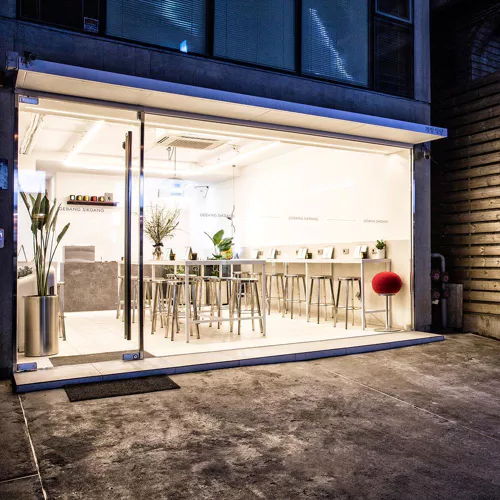

Listings (list view) (grid view)
- Filleter European bibgourmand priceGrade1 “A space of seafood, by seafood, for seafood” captures the culinary ideology of Filleter run by Chef Jung Se-wook, the self-proclaimed and proven seafood aficionado. Naturally, the menu consists entirely of seafood. A cuttlefish dish, made with sweet-flavored butter, caviar, ... 2F, 40-4 Seoulleung-ro 148-gil, Gangnam-gu
- Soi Mao Thai bibgourmand priceGrade1 Thai cuisine meets natural wine at this new location of Soi Mao. The word mao is Thai for inebriated, a nod to the restaurant's focus on natural wine. The first floor offers a simplified menu, while the second floor offers a more extensive list of dishes, intended to be enjoyed ... 30 Dosan-daero 53-gil, Gangnam-gu
-  Gebangsikdang Gejang bibgourmand priceGrade1 Located along a main road in Sindang-dong, Geumdwaeji Sikdang can be easily spotted by its gold-on-white-tile signage and the queue outside the door long after peak dining hours. The establishment serves up fine cuts of YBD pig, a cross breed between Yorkshire, Berkshire ... 17 Seolleung-ro 131-gil, Gangnam-gu
- Geumdwaeji Sikdang Barbecue bibgourmand priceGrade1 Located along a main road in Sindang-dong, Geumdwaeji Sikdang can be easily spotted by its gold-on-white-tile signage and the queue outside the door long after peak dining hours. The establishment serves up fine cuts of YBD pig, a cross breed between Yorkshire, Berkshire and Duroc ... 149 Dasan-ro, Jung-gu
- Piyangkong Halmani Dubu bibgourmand priceGrade1 This long-standing restaurant has thrived for decades serving kongbiji, a hearty peasant stew made from puréed soybeans. The founding matriarch of the establishment is still very much present, cooking alongside her daughter to this day The soybean stew here is made ... 30 Samseong-ro 81-gil, Gangnam-gu
- One Degree North Asian bibgourmand priceGrade1 As suggested by its name, which denotes Singapore's geographical coordinate (one degree north in latitude), this establishment is dedicated to popular Singaporean dishes and Asian barbeque specialties. Singapore chicken rice and Cantonese crispy roast pork ... 8 Hakdong-ro 43-gil, Gangnam-gu
- Jinmi Pyeongyang Naengmyeon Naengmyeon bibgourmand priceGrade1 According to owner and chef Yim Se-kwon, 20 years of experience in the kitchens of one of the most iconic Pyeongyang cold buckwheat noodle restaurants is the secret to the success of this place. The menu here is what you would expect to see in a typical cold buckwheat ... 305-3 Hakdong-ro, Gangnam-gu
- Buchon Yukhoe Yukhoe bibgourmand priceGrade1 Occupying a corner of the well-established raw beef alley of Gwangjang Market, Buchon Yukhoe has been in business since 1965, originally started as Buchon Sikdang selling short rib soup. The founding matriarch's original Jeollado Province-style raw beef, seasoned with ... 200-12 Jong-ro, Jongno-gu
- Woo Lae Oak Naengmyeon bibgourmand priceGrade1 Lauded as one of the best Pyeongyang cold buckwheat noodle restaurants in the city, Woo Lae Oak has been serving consistently stellar food since 1946. The family-operated establishment is tucked away in the back alleys of Euljiro 4-ga, a bustling business hub ... 62-29 Changgyeonggung-ro, Jung-gu
- Hyun Udon Udon bibgourmand priceGrade1 Chef Park Sang-hyeon is a well-respected master of the udon craft. At his Nonhyeon-dong location, Park continues to serve up bowls of thick, silky- smooth, home-made udon noodles with their characteristic firmness and elasticity. If you're unsure of what to order ... 53 Nonhyeon-ro 149-gil, Gangnam-gu
Categories
- A
- B
- C
- D
- E
- F
- G
- I
- J
- K
- M
- N
- R
- S
- T
- U
- V
- Y